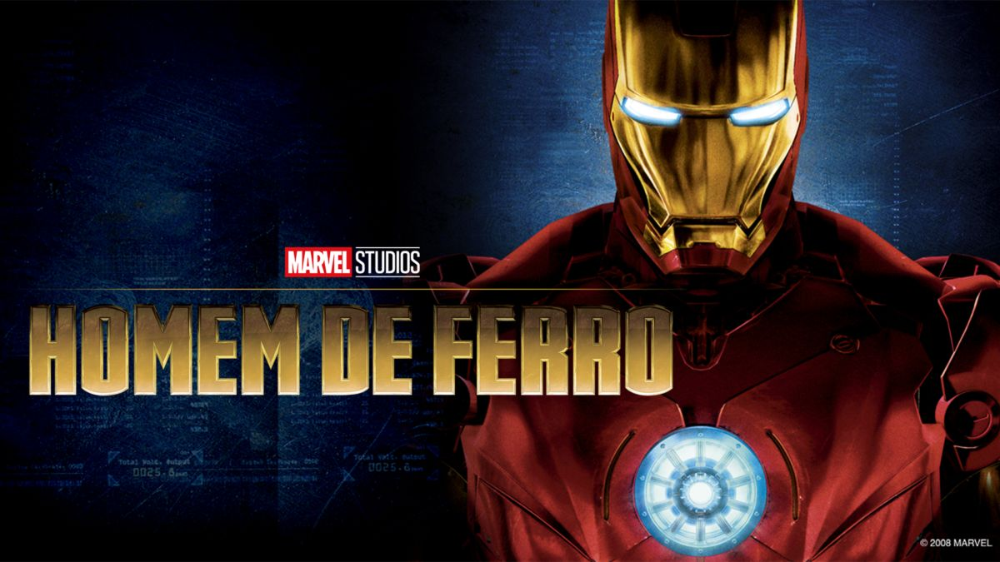
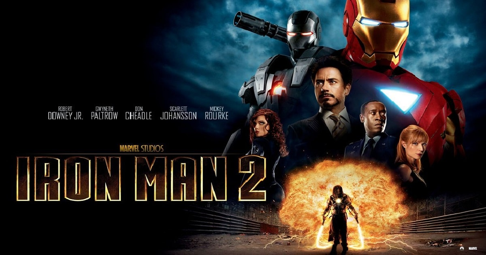
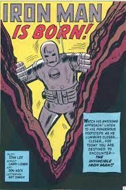

Homem de Ferro (Iron Man, em inglês) é um personagem fictício dos quadrinhos publicados pela Marvel Comics. Sua identidade verdadeira é a do empresário e bilionário, Tony Stark, que usa armaduras de alta tecnologia no combate ao crime. Foi criado em 1963 pelo escritor Stan Lee, o roteirista Larry Lieber, e os desenhistas Jack Kirby e Don Heck. O objetivo de seu criador, Stan Lee, era aceitar o desafio de fazer um personagem ser odiado e depois amado pelo público, assim, criou um dos super heróis mais marcantes de todos os tempos. A primeira publicação foi em Tales of Suspense #39 (história publicada pela primeira vez no Brasil em Heróis da TV #100).[3] Desde então se tornou um dos personagens mais conhecidos da Marvel, como membro dos Vingadores e adaptações para desenhos animados e cinema (no qual foi interpretado por Robert Downey, Jr.).
Tony Stark teve uma relação difícil com seu pai, sendo enviado para um internato aos seis anos de idade, onde ele iria em breve começar a experimentar a convivência com mais pessoas. Mesmo sendo uma criança no Ensino médio, ele era o melhor aluno e considerado prodígio e gênio para muitos. Mais tarde é revelado que Howard mesmo sendo uma boa pessoa, quando é vítima da fraqueza dos Starks (Álcool), se tornava um alcoólatra desprezível tanto verbalmente quanto abusivo, com sua esposa e filho. Foi Howard que forçou Tony a beber sua primeira bebida alcoólica. Howard tentou ensinar à Tony muitas lições, tais como os custos de fazer a guerra e que ele deve sempre limpar suas próprias mãos.
juntou-se então ao programa de graduação no MIT com 15 anos de idade, onde se formou em física e engenharia elétrica. Tal grade dupla de horários foi fácil para ele, e este fato prova sua genialidade ainda na adolescência, uma vez que tais matérias são extremamente difíceis. Por fim, ele recebeu graus de mestre em ambos os campos de estudo. Como um jovem estudante de intelecto genial, Tony Stark conheceu outra mente brilhante, Bruce Banner, pelo Dr. Derenik Zadian na Conferência Pensamentos Avançados ( "Forward Thought Conference" ) na Universidade de Oxford. Isso levaria a uma longa vida de rivalidade científica entre os dois. Pouco tempo depois, Tony matriculou-se na Universidade de Cambridge, na Inglaterra, onde conheceu Cassandra Gillespie. Durante seu primeiro encontro com Cassandra, Tony a protegeu de um grupo de agentes Hydra que estavam atrás da mãe de Cassandra, uma traficante de armas e rival de negócios de Howard Stark. Na sequência deste incidente, Howard trouxe Tony de volta à América e, forçadamente, ele terminou o relacionamento com Cassandra, que mal havia começado. Depois disso, Meredith McCall, filha de Creighton McCall, maior rival de Howard no negócios, se apaixonou por Tony. No entanto, seus pais os proibiram de se virem. Tony derivou em seus anos 20 e se tornou ocioso, rico, indolente e sem raízes, perambulando ao redor do mundo como um jet set aventureiro de playboy.
Quando ele tinha 21 anos, os pais de Tony foram mortos em um acidente de carro e ele herdou os negócios de seu pai, As Indústrias Stark (Stark Industries). Dentro de alguns anos, ele transformou a empresa em um complexo de indústria multi-bilionária cujos contratos chefe eram para armamento avançado e munições para o governo dos EUA. Tony também comprou a empresa que construiu o carro que seus pais estavam dirigindo quando perderam suas vidas e a de falhas corrigidas em projetos de veículos da empresa, incluindo aqueles que envolviam sistemas de "freios".
Na versão original, durante a guerra do Vietnã, o inventor e empresário Tony Stark foi vítima de uma explosão de granada. Stark sobreviveu à explosão mas estilhaços do explosivo se alojaram próximo ao seu coração, ameaçando sua vida. Ele foi capturado e levado até o líder Wong Chu. Restavam apenas alguns dias de vida para o americano, e Wong Chu o forçou a criar uma poderosa arma.Tony não criou uma arma e sim algo que o mantivesse vivo e permitisse derrotar os captores. Preso com ele estava outro gênio, o professor Ho Yinsen. Stark revelou seu plano ao professor e Yinsen o ajudou. Quando os homens de Wong Chu se aproximaram, o velho professor pegou uma metralhadora, mas acabou sendo fuzilado, mas garantiu tempo suficiente para que Stark se recuperasse e se acostumasse a usar a armadura criada. O Homem de Ferro enfrentou os soldados e os derrotou. Sua armadura resistia aos disparos contra ele. Wong Chu tentou fugir e o Homem de Ferro incendiou o galpão de munições fazendo com que a explosão o matasse. Os prisioneiros foram libertados. Desde então Stark desenvolveu novas versões de sua armadura e adotou as cores vermelho e dourado como as padrões da armadura, com algumas pequenas alterações esporádicas como preto, prateado e, mais recentemente, branco. No começo de suas atuações, e para que ninguém desconfiasse, Stark espalhou o boato de que o Homem de Ferro era seu guarda-costas. Nas aventuras dos anos 70 e 80, era comum heróis, vilões e coadjuvantes do Universo Marvel se referirem ao Homem de Ferro como "o lacaio de armadura". Apenas seu motorista, Harold "Happy" Hogan, e sua secretária, Virginia "Pepper" Potts, sabiam da identidade secreta de Stark. Ainda na versão original, Tony Stark colaborava com as forças armadas americanas, desenvolvendo armas e máquinas com o objetivo de usá-las na Guerra Fria. Seus inimigos frequentes eram os comunistas (russos, asiáticos ou latino americanos: pessoas que defendiam o comunismo/socialismo). Enfrentavam o Homem de Ferro rivais tecnológicos como o Dínamo Vermelho (ou Escarlate) e o primeiro Homem de Titânio. Ou espiões especiais como a Viúva Negra e o Espião Mestre.